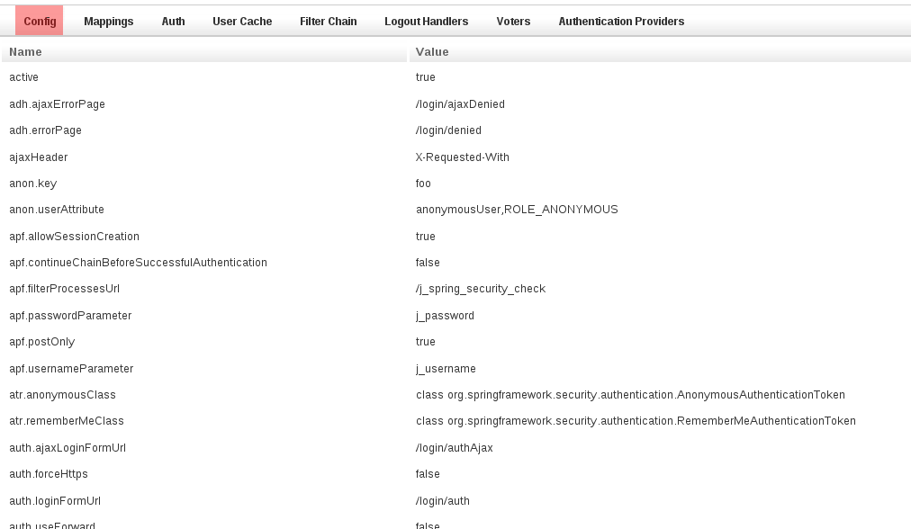
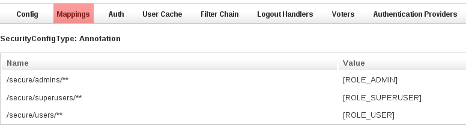
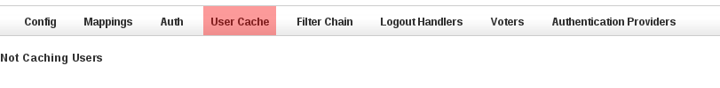
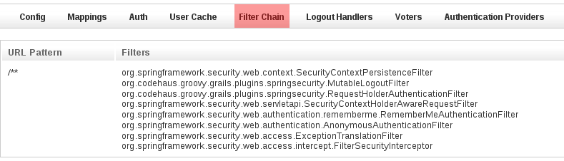

2 Security Configuration UI - Reference Documentation
Authors: Burt Beckwith
Version: 2.0.0
2 Security Configuration UI
The plugin has one controller (SecurityInfoController.groovy) and is available by navigating to /appname/securityInfo. There are eight menus:Configuration
The Configuration menu item displays all security-related attributes inConfig.groovy. The names omit the grails.plugin.springsecurity prefix:Mappings
The Mappings menu item displays the current request mapping mode (Annotation, Requestmap, or Static) and all current mappings:Current Authentication
The Current Authentication menu item displays yourAuthentication information, mostly for reference to see what a typical one contains:
User Cache
The User Cache menu item displays information about cached users (this feature is disabled by default):Filter Chains
The Filter Chains menu item displays your configured Filter chains. Typically there is just one chain, applied to all URLsIt is possible to have multiple URL patterns each with its own filter chain, for example when using HTTP Basic Auth for a web service.Logout Handlers
The Logout Handlers menu item displays your registeredLogoutHandlers. Typically there will be just the two shown here, but you can register your own custom implementations, or a plugin might contribute one or more:
Voters
The Voters menu item displays your registeredAccessDecisionVoters. Typically there will be just the three shown here, but you can register your own custom implementations, or a plugin might contribute one or more:
Authentication Providers
The Authentication Providers menu item displays your registeredAuthenticationProviders. Typically there will be just the three shown here, but you can register your own custom implementations, or a plugin (e.g. LDAP) might contribute one or more: